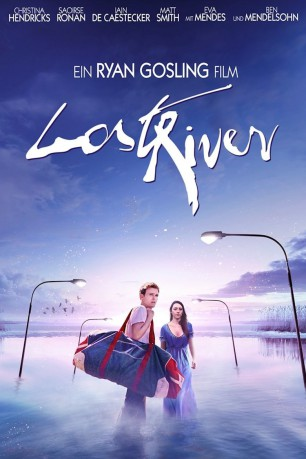

 
 IMDB-Wertung: 5.8 / 10
IMDB-Wertung: 5.8 / 10  Metascore:
Metascore: 
Die alleinerziehende Mutter Billy lebt mit ihren beiden Kindern Bones und Franky in Lost River, einem trostlosen Ort, der zunehmend zur Geisterstadt wird, da die Immobilienkrise die Bewohner wegtreibt. Als Billy mit den Hypothekenzahlungen in Rückstand gerät, lässt sie sich auf eine Idee des Bankmanagers Dave ein. Der erzählt ihr von einer Möglichkeit, wie sie vorerst über die Runden kommen kann: Um ihr Haus nicht zu verlieren, soll Billy in seinem Nachtclub arbeiten. Dort trifft sie nicht nur auf die geheimnisvolle Cat, sondern setzt schließlich auch ihr eigenes Leben aufs Spiel. Während sie mehr und mehr in eine morbide und düstere Unterwelt abtaucht, klaut ihr Sohn Bones wertvollen Kupferdraht aus den Wänden verlassener Häuser. Dabei hat es jedoch bald der brutale Bully, der sich selbst als Herrscher über die Stadt sieht, auf ihn abgesehen, wodurch auch Bones' freundliches Nachbarsmädchen Rat in Gefahr gerät.
Jahr: 2014
Dauer: 95 Minuten
FSK: 16
Land: USA Studio: Warner Bros.Tonspuren: DTS - ,
Untertitel: Deutsch,
Auflösung: 1080p (1920x800) Größe: 3368 MB
Genre: Drama, Fantasy, Mystery, Thriller
Regisseur:  Ryan Gosling
Ryan Gosling
Drehbuch: Ryan Gosling
Soundtrack: Johnny Jewel
Darsteller:
 Christina Hendricks als Billy
Christina Hendricks als Billy Saoirse Ronan als Rat
Saoirse Ronan als Rat Ben Mendelsohn als Dave
Ben Mendelsohn als Dave Eva Mendes als Cat
Eva Mendes als Cat Barbara Steele als Grandma
Barbara Steele als Grandma Demi Kazanis als Club Bartender , uncredited
Demi Kazanis als Club Bartender , uncreditedDatei: X:\2014(G-M)\Lost River (2014, FSK16, 1920x800) 3D.mkv seit 04.11.2015
Festplatte: HD 2013(I-Z)-2014(A-Z)
 Es gibt insgesamt 136 Filme in der Gruppe '2014(G-M)'
Es gibt insgesamt 136 Filme in der Gruppe '2014(G-M)'